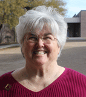

"To share the love and the light of Jesus Christ so all people may know God"
"For God so loved the world that he gave his only Son, so that everyone who believes in him may not perish but may have eternal life." John 3:16
"Go therefore and make disciples of all nations." Matthew 28:19
"You are the light of the world...let your light shine before others, so that they may see your good works and give glory to your Father in heaven." Matthew 5:14,16
"This is my command: Love each other." John 15b
Our Strategy:
Gather
people to meet Jesus
Grow
to become more like Jesus
Go
spread the love of Jesus
Reach Out ... with the Good News of Jesus in a language people can understand because all people matter to God.
Participate Fully ... with a servant's heart, in mission activities based on our giftedness and passions.
Worship ... in a way that is inspiring, culturally relevant, participatory, grounded in the Bible, and our best.
Grow ... as obedient disciples of Jesus by listening to God in faithful study, prayer, and service, by acting on what God tells us, and by training others how to listen and act.
Care ... for the whole family, all ages and stages.
Share ... the resources God has given us to steward, with generous and compassionate hearts; giving to God and giving to those in need.
We Believe:
Jesus Christ is the Son of God.
Jesus lived on the earth, died on the cross, and was raised from the dead.
Everyone is born with a sin disease and is separated from God; that separation can only be cured by trusting your life to Jesus.
The Bible is the Word of God.
Worship is our expression of love to God.
The Church is all people who have trusted their lives to Christ; it is God's plan for reaching the world with the Good News of Jesus.
Sacraments, Baptism and Holy Communion, are God's gifts to us. We understand a sacrament to be something that Christ Himself commanded us to do; it involves an earthly element (water, bread, wine), and is a promise by God and a celebration of forgiveness and new life.
Jesus Christ will one day return to judge the living and the dead.
Followers of Jesus are called to grow in a personal relationship with Jesus, to do what Jesus tells us to do, to allow God's Word to change us to be more like Jesus, and to share the love of Jesus with others.
Pastor Paul Witkop
480-488-2716
Bio
Personal Background
Married to the love of my life and best friend, Betsy, on May 29th, 1993.
Born in Springfield, Illinois to the greatest parents, Wellington and Marilyn. I have three brothers who are my next best friends, John, Philip, and David.
Blessed with three tremendous children, Sarah (1994), David (1995) and Daniel (1998); and our dog, Snickers.
Served as Pastor of Light of the Desert since April, 1995.
Rest of the Story
I attended Augustana College in Rock Island, Illinois and graduated with a degree in Accounting and Business Administration. I worked for Peat Marwick Mitchell as a CPA for six years before attending Trinity Evangelical Divinity School and Lutheran School of Theology at Chicago to earn a Masters of Divinity in 1990.
My hobbies include most sports, playing guitar, coaching my kid’s sports teams when they were younger, and music of all kinds. Hiking with Betsy is the greatest. I also really enjoy basketball, football, baseball, golf, tennis, and jogging. We all enjoy traveling and hanging out with our family and friends. I am an avid fan of the Phoenix Suns, Green Bay Packers, and San Francisco Giants.
Assoc. Pastor Michael Bailey
Next Generation Ministries
480-488-2716
Bio
Originally from Muncie, Indiana I came to Light of the Desert via Chicago where I was finishing my Master’s of Divinity (M.Div.) from Trinity Evangelical Divinity School. My wife, Denise, and I met while studying at Calvin College in Grand Rapids, MI where I received my Bachelors degree in Religion and Theology. I have been in Student Ministry since 2005 and have served in churches throughout the Midwest. I have a passion for ministry to students and young adults and feel that these generations have an excellent opportunity to transform the world. In my free time I enjoy playing golf, rugby, reading, working out, spending time with Denise, and rooting for Notre Dame Football, the Indianapolis Colts, and the Chicago Cubs.
Tamra Duncan
Director of Music Ministries
480-620-4762
Bio
Hello, I am Tamra Duncan, the Director of Music Ministries at Light of the Desert Lutheran Church. I began my ministry here in 2007 but have been involved in church music ministry for the majority of my life.
My roots are based out of Wisconsin. I grew up on a small farm in Pewaukee Wisconsin. My parents were not musical at all but they scraped enough money together to bless my brothers and I with piano lessons. I loved playing the piano and my brothers, well... not so much. I continued taking lessons and decided with the help of my high school choir teacher to pursue music in college. I moved to Florida and majored in piano performance then took a hiatus and eventually graduated from Grand Canyon University with my bachelors in music (emphasis in choral studies and voice) and went on to a master’s degree in music education through ASU. I have been teaching music in the Paradise Valley School district for 15 years. I currently teach choir and piano at Paradise Valley High School.
When I’m not working I love spending time with my husband Jeff and my two dogs. I have 2 grown daughters, Tonya and Kia who fill me with joy and make me so proud. Hiking, biking, working out, reading and traveling are some of my favorite things to do. God has blessed me greatly in doing what I love as a career with people that share the same passion. God is good, All the time.

Patty Robinson
Administrative Assistant to the Pastor
480-488-2716
Bio
My life verse is Jeremiah 29:11 “For I know the plans that I have for you,” declares the LORD, “plans for welfare and not for calamity to give you a future and a hope.” This verse has certainly held true at many times in my life but especially as the Lord led me to worship at Light of the Desert. Thirty years of service in the corporate world was enough for me and God called me to “trust” him for my future – and to devote more of my time to his work. I have served him here at LOD as a volunteer: teaching, leading small groups, and as the Director of Adult Ministries; when the opportunity came to work alongside the staff as Administrative Assistant to the Pastor – that was just icing on the cake. Every day I look forward to seeing what “new plan” God has for me and I am blessed to be a part of this church family.
Shawn Chappel
Director of Children's Ministries
480-329-2020
Bio
My wife Laura and I first visited Light of the Desert in the summer of 2003 with our children Grace and Sam for Vacation Bible School. We were blessed and drawn by the warm reception of the Light of the Desert Family and within the year we joined the church as members. In September of 2004 our family was blessed with the addition of our daughter Caroline and she was baptized at LOD a short time later. I volunteered intermittently with several ministries at LOD including serving on the church council. After serving on the council I answered the call to teach Sunday School to the 3rd – 5th Graders at LOD. This became a real blessing and source of joy for me. I was blessed with more free time and began teaching more frequently until it became a regular thing. I feel very called and excited about serving as Director of Children’s Ministries.
Outside of the church I was in the hospitality business for 30 years with 25 of those years as an aspiring cook and finally an Executive Chef. The last five years of my career in the hospitality business were as a Clubhouse Manager for a private golf club in Scottsdale, AZ. I am currently a Realtor with Russ Lyon Sotheby’s International Realty and enjoying much more free time with my awesome wife Laura and our wonderful children.
My Life Verse is Jeremiah 29:11
For I know the plans I have for you,” declares the LORD, “plans to prosper you and not to harm you, plans to give you hope and a future.
Organizations:
Lutheran Congregations in Mission for Christ (LCMC)
Lutheran Congregations in Mission for Christ is an association of congregations and individuals who are free in Christ, accountable to one another, rooted in the Scriptures and the Lutheran Confessions and working together to fulfill Christ's Great Commission to go and make disciples of all nations.
LCMC Statement of Faith:
We believe, teach, and confess the Triune God, Father, Son, and Holy Spirit.
We believe, teach, and confess Jesus Christ as Lord and Savior and the gospel as the power of God for the salvation of all who believe in him. Jesus Christ is the Word of God incarnate, through whom everything was made and through whose life, death, and resurrection God fashions a new creation. The proclamation of God’s message to us as both law and gospel is the Word of God, revealing judgment and mercy in the person and work of Jesus Christ through whom God was pleased to reconcile all things to himself.
The canonical Scriptures of the Old and New Testaments are the Word of God. Inspired by God’s Spirit speaking through their authors, they record and announce God’s revelation centering in Jesus Christ. Through them God’s Spirit speaks to us to create and sustain Christian faith and fellowship for service in the world.
We believe, teach, and accept the canonical Scriptures of the Old and New Testaments as the inspired Word of God and the sole authoritative source and norm of our proclamation, faith, and life.
We accept the Apostles’, Nicene, and Athanasian Creeds as true declarations of the scriptural faith we believe, teach, and confess.
We believe, teach, and accept the Unaltered Augsburg Confession and the Small Catechism as true witnesses to the Word of God, normative for our teaching and practice. We acknowledge that we are one in faith and doctrine with all churches that likewise accept the teachings of the Unaltered Augsburg Confession.
We believe, teach, and confess the other confessional writings in the Book of Concord, namely, the Apology of the Augsburg Confession, the Smalcald Articles, the Treatise, the Large Catechism, and the Formula of Concord, as further valid expositions of the Holy Scriptures.
We believe, teach, and confess the gospel, recorded in the Holy Scriptures and confessed in the ecumenical creeds and Lutheran confessional writings, as the power of God to create and sustain the priesthood of all believers for God’s mission in the world.
Willow Creek Association
Light of the Desert is one of more than 7000 churches from 90 different countries, from many
different denominations and backgrounds who are committed to a singular idea: that inspired,
encouraged, and equipped Christian leaders create thriving local churches that redeem their
communities for Christ. The centerpiece of the WCA is the annual Global Leadership Summit
willowcreek.com/events/leadership that
brings together by satellite more than 100,000 leaders who want to become better leaders for the sake
of the Gospel. Light of the Desert leaders have been participating regularly in the Summit since 1995
Check out willowcreek.com for more information about the Willow Creek Association.
Contact Us:
The church office is open between 10:00am and 2:00pm on Monday-Friday.
Children Kindergarten through 5th grade are dismissed during a portion of the service for Children's Church.
On communion Sundays, the children return from Children's Church in time to participate in communion with their families.
Nursery is available during the worship service.
What to Expect:
From the fall to the spring, we offer two services, which are identical to each other. We’re a pretty relaxed bunch here and our congregation bridges many generations so there is a place for you here. We offer a blended style of music, from traditional hymns to the current Christian contemporary music. After the music is finished, there will be a sermon focused on Scripture that challenges and encourages. We offer communion on the first and third Sunday’s of each month. No dress code required here, come as you are. Most people you’ll find here on a Sunday morning are in jeans and polo or button down or supporting their favorite sports team of the season. After our services you will find many of us hanging out in the lobby, enjoying donuts, lemonade, and coffee each Sunday. We hope to see you here soon!
"But you will receive power when the Holy Spirit comes on you; and you will be my witnesses in Jerusalem, and in all Judea and Samaria, and to the ends of the earth." Acts 1:8
Children/Youth:
Kids Kingdom
Kindergarten - 5th Grade
Sundays during the services
Room 102 and Youth Room
Contact Shawn Chappel for more information:
JAM
Junior High
Sunday evenings 5:00pm to 6:30pm
Youth Room
Contact Pastor Michael Bailey for more information:
DV8
Senior High
Sunday evenings 6:30pm to 8:00pm
Youth Room
Contact Pastor Michael Bailey for more information:
The understanding of Grace is fundamental to the Christian faith.
This 6 week series is done by Tullian Tchividjian, the Senior Pastor at Coral Ridge Presbyterian Church and the grandson of Billy Graham.
Come for one or come for all six sessions.
Women:
Women's Bible Study - On Break Until September
Thursday Evenings 6:45pm to 8:30pm
Room 101 at the church
Contact Patty Robinson for information:
Women's Bible Study - On Break Until September
Tuesday Mornings 9:00am
Terravita
Contact Carol Borchard for information:
LOD Women's Retreat 2016
SAVE THE DATES!
April 29 - May 1, 2016
"Lavender Springs Spa: Where women rest in God's Faithfulness"
A spiritually nourishing retreat based on some of the Psalms
Key verse: For the Lord is good. His unfailing love continues forever, and His faithfulness continues to each generation. Psalm 100:5
Men:
Men's Bible Study - Matthew
Wednesday Mornings 6:00am
IHOP at 19th Avenue and Bell Road
Contact Pastor Paul Witkop for more information:
Men's Bible Study - On Break Until September
Wednesday Mornings 8:00am
Room 101 at the church
Contact John for more information:
Man Cave Events
Periodically throughout the year we will be getting together for fellowship and great discussions on what it means to live as man of God. Good food is usually also a part of the equation. Be sure to look for these dates on our event calendar.
Contact Brian for more information:
Serve Your Church Familiy:
Donut Servers
Contact Patty Robinson for information:
Greeters and Ushers
Contact Peggy for information:
Communion Assistants
Contact Nancy for information:
Music
Contact Tamra Duncan for information:
Technology
Contact Jeff Duncan for information:
We will be hosting a Cave Quest VBS on June 20-24 from 9:00am to Noon.
Kids ages 4-9 are welcome to participate in this fun event. Registration cost is $25 per child. Scholarships are available.
"But you will receive power when the Holy Spirit comes on you; and you will be my witnesses in Jerusalem, and in all Judea and Samaria, and to the ends of the earth." Acts 1:8
How We Serve Our Community:
For more information about any of these ministries, contact Pastor Paul Witkop at , Pastor Michael Bailey at , or Patty Robinson at .
Neighbors in Need
We support this organization that coordinates all the social need
agencies in the Cave Creek/Carefree area.
We support this Christ centered ministry that serves the homeless, low-income, at-risk youth and struggling individuals by providing resources and supportive services.
We support JD Hill in his efforts to help the youth of Arizona make right choices to avoid the pitfalls of drug and alcohol abuse and find hope in Jesus Christ.
We support this organization that seeks to transition adolescent girls who have been involved in trafficking and exploitation to triumph in Jesus Christ.
We support and serve meals the second Sunday evening of each month in an inner city setting. All are invited to serve.
La Sagrada Familia
We support our Latino brothers and sisters in Christ and the congregation
of La Sagrada Familia located in the Bell Road and 28th street area.
Light the Way
We support this new congregation of Lutheran Congregations in Mission for
Christ in Cortaro, Arizona.
Hope Church inner city
We support this new congregation of Lutheran Congregations in Mission for
Christ in the inner city of Phoenix.
"But you will receive power when the Holy Spirit comes on you; and you will be my witnesses in Jerusalem, and in all Judea and Samaria, and to the ends of the earth." Acts 1:8
How We Serve Our World:
For more information about any of these ministries, contact Pastor Paul Witkop at , Pastor Michael Bailey at , or Patty Robinson at .
Missionary Support
Louis and Annie Liss - Missionaries to Lebanon
Mark and Dalene Good - Missionaries with Assemblies of God in France
Kent and Shelley Scott - Missionaries with World Mission Prayer League in Bangladesh
John and Betsy Gronseth - Missionaries with World Mission Prayer League in China
Bosnia - Support and relationships with Evangelical Church in Bosnia and Children’s Camp
Hope4Kids
Through Hope4Kids, we have adopted and befriended a village in Kasolo, Uganda, Africa. The name of our sister church in Kasolo is Amazing Grace Church. They pray for us and we pray for them and look for other ways to show our friendship.
We support this organization not only
with our offerings but also with volunteer time packing food.
Look for sign-up sheets in the narthex as
the dates draw near. Check the list to
see who you might want to carpool
with. If you have any questions about
Feed My Starving Children, see Kathy
Grandprey.
Each year, we pack more than a thousand shoeboxes with toys, shoes, clothing, hygiene items,
candy and a Gospel message. The boxes are sent to third world children.
"Focus on the Family exists to serve you and your family... Every day we're at work on new programs and initiatives that will help you and your family even more" (www.focusonthefamily.com). At Focus on the Family, you will find valuable articles, books, and CDs that will aid in your pursuit to be a loving and effective parent.
Lutheran Congregations in Mission for Christ is an association of congregations and individuals who are free in Christ, accountable to one another, rooted in the Scriptures and the Lutheran Confessions and working together to fulfill Christ's Great Commission to go and make disciples of all nations.
Founded in 1992, Willow Creek Association (WCA) serves pioneering pastors and leaders through world-class leadership experiences and resources. WCA is committed to a singular idea: that inspired, encouraged, and equipped Christian leaders create thriving local churches that redeem their communities for Christ.
Apps:
LifeChurch TV Bible App
A free Bible app for your mobile device with multiple translations, reading plans, and more.